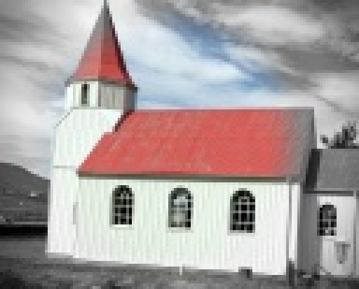
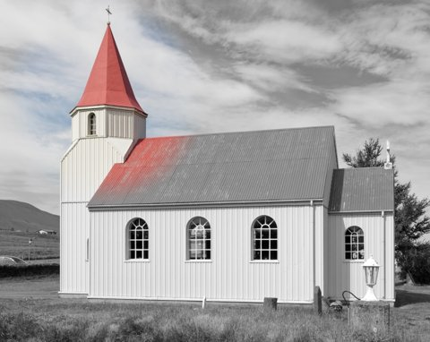
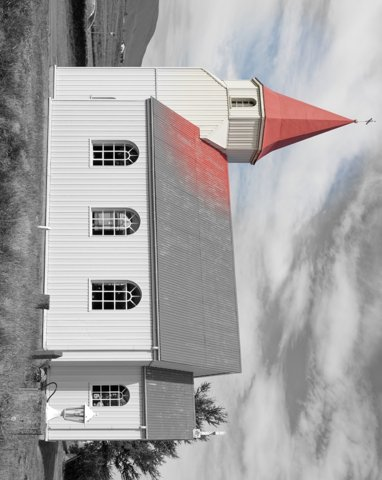
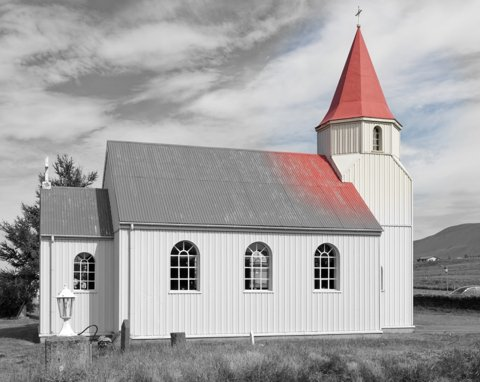
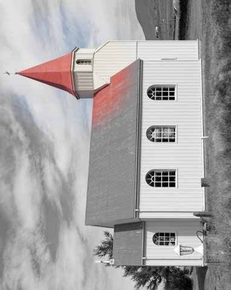

Edits are recipes
Dalíca never edits your pixels while you work. Every crop, fix and effect is a line of text in a list, and the picture you see is that list played back over the untouched original. This chapter explains the list: its syntax, the order it renders in, why it looks the same at every size, how it survives rotations, how undo walks it, and what happens on disk when you finally press Save.
The recipe
A photo's edits are stored as an ordered list of operation strings, in the order you applied them. Dalíca calls this list the recipe. It lives in the folder's sidecar file .dalica.json, under the photo's name, as two JSON arrays: "edits" (what is applied) and "redo" (what Undo took back and Redo can put back).
"IMG_0001.jpg": {
"edits": ["rotate(90)", "crop(0.08,0.10,0.92,0.86)", "straighten(1.5)",
"autofix()", "tuning(0.25,0,0,0,none)", "sepia()"],
"redo": ["glow(0.4,3)"]
}Your original file is not touched by any of this. Thumbnails, the edit view and Export all read the original and replay the recipe. Only Save (at the end of this chapter) ever writes edited pixels into a file, and even then the original is kept.
Why: a list of instructions is small, can be undone step by step at any later time, can be copied to other photos (Paste All Edits, Batch Edit), and never compounds JPEG losses, because every render starts again from the original pixels.
The text syntax
Each entry is one string of the form name(params). The name is a lowercase ASCII letter followed by lowercase letters, digits and _. The parameters are separated by commas and may not contain a parenthesis or a control character. The same text is used everywhere: in the sidecar, in the recipe API that agents and the command line use (where a whole recipe is written as one string with the entries joined by |), and in the History pane.
| Entry | Parameters |
|---|---|
rotate(90), rotate(180), rotate(270) | a clockwise quarter, half or three-quarter turn; nothing else is a rotation |
flip_h(), flip_v() | mirror left to right, top to bottom |
crop(x0,y0,x1,y1) | a normalized rectangle, corners in order, each value 0 to 1 |
straighten(deg) | -10 to +10 degrees, clockwise positive |
autofix(), autocontrast(), autocolor() | none: they measure the picture when rendered |
tuning(fill,highlights,shadows,temp,neutral) | 0 to 1, 0 to 0.5, 0 to 0.5, -1 to 1, and #rrggbb or none |
retouch(…), soften(…) | strokes: points and a radius per stroke, separated by ; |
27 effects, such as vignette(35,1.4,#000000,0) | the controls of the effect's panel, in panel order |
Numbers are written as the shortest decimal text that reads back to the same value (0.6, 20). A number outside its range is brought to the nearest end when it is read, so straighten(25) renders as 10 degrees. Colors are #rrggbb in sRGB, read in either case and written in lowercase. Checkboxes are true or false, and choices are their words (normal, soft_light).
Parsing never fails and never changes the text. Dalíca only treats an entry as a typed operation when its text is exactly what Dalíca itself would print; anything else is kept character for character. rotate(090) is not rewritten to rotate(90): it is kept as written and skipped, because changing your text behind your back is a kind of data loss too. A recipe may hold at most 10 000 entries, the cap the sidecar reader enforces.
How rotations and flips merge
Rotations and flips are ordinary entries, but appending one follows two rules. A rotation right after a rotation merges into it: rotate(90) then another rotate(90) becomes rotate(180), and a net whole turn removes the entry altogether. A flip right after the same flip cancels it. Only the last entry is ever merged, so a rotation, then a crop, then another rotation keeps both rotations. This keeps a photo you spun around four times from carrying four entries, while never reaching back past an edit that came in between.
The order it renders in
The recipe records the order you worked in, but rendering does not follow it blindly. Rendering applies a fixed pipeline order: geometry first, then everything else in the order applied. That is what lets you crop after an effect, or straighten after a crop, and get the same picture either way.
- The decoded original is turned upright by its EXIF orientation.
- The last
straightenand the lastcrop, wherever they stand in the list, are applied together with the scaling to the target size, in a single resample. Only the last crop counts, which is why re-opening Crop replaces the earlier rectangle instead of cropping a crop. - Every other operation Dalíca knows runs in the order you applied it. Operations that only read their own pixel run fused in bands of 32 rows and are rounded to 8 bits once per run, not once per operation. An operation that reads neighbors (a blur, a glow) or measures the picture (the one-click fixes) starts a new run.
- The rotations and flips, added up to one of the eight possible orientations, are applied last. They move whole pixels without resampling, so their position in the list does not matter.
Resampling averages on the sRGB-encoded values. When an output pixel covers two or more source pixels, the source is first reduced by the whole part of that footprint with a box filter, then each output pixel averages up to 4 by 4 bilinear taps. Operations run on 32-bit floating point values from 0 to 1.
One recipe, every size
The same recipe draws a 128-pixel thumbnail, a full-screen preview, a zoomed region in the edit view and a 24-megapixel Save. For all of them to show the same picture, nothing in a recipe is measured in pixels:
- Positions are normalized. A crop corner, a retouch spot or the center of Focal B&W is a fraction of the picture's width and height, from
(0,0)at the top-left to(1,1)at the bottom-right. - Sizes are relative to the shorter side. Focal B&W's size 0.28 is a radius of 28 % of the shorter side. Glow's radius is in percent of it; HDR Look's radius, Pixelate's pixel size and Border's thicknesses are in thousandths of it. Vignette's size is in percent of the half-diagonal. A brush stroke's radius is a fraction of the shorter side too.
- Measurements are made at one size. The fixes that look at the picture (Auto Fix, Auto Contrast, Auto Color) do not measure the picture they are drawing. They measure their own copy of it, rendered so its longer side is 256 pixels, whatever the output size. A thumbnail and a full-size Save therefore compute the very same black point and color gains. (The chapter Auto Fix, Contrast and Color shows the measurement in detail.)

128 px (enlarged 4×)straighten(3)|crop(0.1,0.04,0.86,0.96)|autofix()|focal_bw(0.46,0.5,0.28,0.5)|vignette(35,1.4,#000000,0), rendered by Dalíca at three sizes. The tilt, the crop edges, the edge of the color circle around the church and the vignette's falloff land on the same part of the picture each time. Rendered with Dalíca's export pipeline, which renders at full resolution and then reduces; thumbnails and the edit view render at their own size directly, and the edit crate's tests check that such a small render matches a large one box-reduced to the same size.What this means for you: the thumbnail you judge an edit by is not an approximation. A vignette that looks right in the grid looks right in a full-size Save, because both were drawn from the same fractions and the same measurements.
The coordinate frame
Normalized coordinates raise a question: normalized to which picture? If you crop, then rotate the photo a quarter turn, the "top-left" of the picture has moved. Dalíca answers it once, for everything: every stored rectangle and point is measured on the photo after its EXIF orientation and before Dalíca's own rotations and flips. This is the stored frame. What you see is the displayed frame: the stored frame turned by the recipe's rotations and flips.
The crop rectangle, retouch source and target points, the centers of Soft Focus, Focal B&W, Graduated Tint and Focal Zoom, and the face rectangles are all in the stored frame. Coordinates are converted only to draw them on screen and to read your clicks and drags back.
| Recipe turns the picture by | A stored point (x, y) is shown at |
|---|---|
| nothing | (x, y) |
rotate(90) | (1 − y, x) |
rotate(180) | (1 − x, 1 − y) |
rotate(270) | (y, 1 − x) |
flip_h() | (1 − x, y) |
flip_v() | (x, 1 − y) |
All rotations and flips in a recipe add up to one of eight orientations, and the mapping uses only swaps and 1 − v. Converting a point to the screen and back gives the stored value back exactly for values such as k / 2ⁿ, and otherwise to within one rounding of 1 − v (about 1.1 × 10⁻¹⁶). Lengths relative to the shorter side are the same in both frames. An angle measured in the stored frame, such as the straighten angle, turns the other way on screen when the recipe mirrors the photo.

crop + Focal B&W
… then rotate(90)
… then flip_h()
rotate(90) first, flip_h() lastcrop(0.12,0.02,0.92,0.98)|focal_bw(0.31,0.3,0.2,0.5) with rotations and flips added before or after. The crop and the color circle follow the tower in every case, because both are stored in the frame that rotations never touch. The second and the fourth differ only by the mirror: where the rotation stands in the list makes no difference.Why this frame: because rotations and flips are separate entries that never rewrite a coordinate, adding or undoing a rotation is always a one-entry change that never rewrites a crop, a retouch stroke, an effect's center or a face rectangle, and an unknown operation from a newer Dalíca keeps its coordinates right without having to be understood. Faces are detected on the upright decode, which is the stored frame, so face rectangles also stay valid however you turn the photo later.
The renderer works the same way: it straightens and crops in the stored frame, then applies the rotations and flips, which gives the same picture as turning first and cropping with the converted rectangle. When Save writes rotations into the pixels, the stored frame becomes the displayed one, so Save maps the face rectangles it keeps into the new frame with the same functions, and Undo Save maps them back.
History and undo
Dalíca has two undo histories, and which one Ctrl+Z walks depends on where you are.
- The library undo stack
- In the library view, Undo and Redo walk the library's own stack: stars, captions, tags, hiding, moves, renames, album changes, rotations made from the library, Batch Edit and Paste All Edits. It lives in memory for the session and holds at most 1 000 steps.
- The photo's own history
- In the edit view, the same keys walk the open photo's history instead. It is stored in the folder sidecar as the
"edits"and"redo"lists, so it survives quitting Dalíca. Everything you do in the edit view, rotations and flips included, goes here and not onto the library stack.
The menu label always names the step it will undo ("Undo Star", "Undo Crop"), which is how you can tell which history is active.
"redo", Redo moves it back, and a new edit clears the redo list. Because both lists are on disk, a photo you edited last month can still be undone step by step.Steps that are not one entry
- Merged steps. A second rotation that turned
rotate(90)intorotate(180), or a flip that cancelled the flip before it, undoes to the entry's earlier value, and Redo merges it again. The session remembers, per photo, how each step changed the end of the recipe. If that memory no longer matches (the recipe was changed by a library step, another program, or a restart), the step undoes as the plain last entry, so after a restartrotate(180)undoes in one step. - Coalesced sessions. Changes that share a session key and each replace the entry the previous one left are one step. A Tuning tab session is the main case: sixty slider movements are one "Undo Tuning".
- Whole recipes. Paste All Edits, and agents setting a recipe directly, replace a photo's recipe as one step: one Undo gives the whole earlier recipe back. That memory lasts for the session; after a restart the step undoes as its last entry.
- Crop is re-openable. Crop is the one exception to a strictly linear history: you can open it again at any time, see the whole photo with the current rectangle, and change it. Since only the last crop renders, the new rectangle replaces the old one without undoing the edits made after it.
- Undo All Edits empties each unsaved recipe and its redo list as one undoable step (a library step in the library, a step of the photo's history in the edit view). A saved photo keeps its saved pixels; Undo Save is the way back to its original.
Tuning: in place or appended
The Tuning tab (Fill Light, Highlights, Shadows, Color Temperature, Neutral Color Picker) is a single entry, tuning(fill,highlights,shadows,temp,neutral), and its sliders always show the photo's last Tuning entry, wherever it sits in the list. When you move a slider, Dalíca has to decide whether to change that entry or add a new one. The rule depends on what comes after it:
- Only rotations and flips after the last Tuning: the session updates that entry in place and keeps the rotations after it. One Undo puts the earlier values back where they were.
- Anything else after it (Retouch, Crop, Straighten, a fix, an effect, or an entry Dalíca does not know): those edits were made on the tuned pixels, so the session appends a new
tuningentry instead. It starts from the defaults and holds only the controls you moved in this session, so the earlier Tuning is not applied twice. From then on the sliders show the new entry. - No Tuning yet: the session appends one.
Slider values are stored to three decimals, so the recipe text stays short and free of floating-point noise.
Operations Dalíca cannot read
A recipe can contain entries this copy of Dalíca does not understand: an operation from a newer version, a parameter out of range such as rotate(45), a damaged line, or an edit converted from the classic folder-based organizer that has no equivalent (kept as legacy:name(…)). All of them follow the same rule: kept verbatim, in place, and skipped by rendering. They never stop the entries after them from rendering, and they are written back to the sidecar exactly as they were read.
The same applies to a known operation whose parameters its module refuses: a NaN, a missing or extra field, a color that is not #rrggbb, a word that is not one of the choices. The entry stays, labeled, and is skipped.
Two places refuse to go further rather than lose such an entry:
- Save refuses a recipe that holds an operation Dalíca cannot render, and names it. Baking pixels would silently drop that operation, and the original would no longer carry it either.
- Setting a whole recipe (Paste All Edits, or an agent's
edit.recipe.set) checks every photo and entry before any photo changes. An unreadable entry may stay only where the photo already holds it. Adding a new one is refused ("is not an operation Dalíca applies"), and leaving out one the photo holds is refused by name unless the caller explicitly asks to drop unknown entries.
Save, Undo Save, Revert, Save a Copy
Save is the only command in Dalíca that changes a photo's pixels, and it is built so that the original is recoverable at every instant, even if the power fails halfway through.
Which files are saved in place
| Your file | What Save writes | The original |
|---|---|---|
| JPEG | the edited JPEG under the same name, quality matched to the original's estimated quality (90 if it cannot be estimated) | moved byte for byte into .dalica-originals/ |
| PNG without transparency | the edited PNG under the same name | moved into .dalica-originals/ |
| Everything else: PNG with transparency, TIFF, WebP, GIF, BMP, HEIF, JPEG XL, PSD, raw files | a new JPEG beside it, name.jpg, or the first free name-001.jpg, -002, … | untouched, still the photo you edit |
Saving beside never replaces a file. The new JPEG is a new, unedited photo in the library; the source records it as its savedAs, and Undo Save and Revert do not apply to it. A JPEG whose recipe only rotates and flips is saved losslessly: the file is turned in its compressed coefficients with its own quantization tables, so nothing is re-encoded. When that is not possible (a partial block on an edge that would move, progressive or arithmetic-coded files, data after the end of the image), the pixels stay byte for byte and only the orientation tag changes.
.dalica-originals/ folder, with a record of the recipe it was saved with. The TIFF cannot be written in place, so it gets a JPEG beside it and stays exactly as it was.The originals record
Next to the kept originals, .dalica-originals/.dalica.json holds one entry per kept original, keyed by file name: the whole recipe the saved file holds, the original's size in bytes, its mtime in milliseconds, its pixel width and height, an MD5 digest of its bytes, the time of the Save, and a state that is pending or done. The first original is always the one kept: a second Save renders from the kept original with the recorded recipe followed by the new edits, so JPEG losses never compound however often you save.
The write order
The record's entry is a journal. It is written before anything moves and marked done last, so at every moment the original's bytes are either at the photo's name or in .dalica-originals/ with an entry naming them. Save runs on a worker thread, and every disk step goes through Dalíca's file-system layer, which writes atomically (a temporary file, flushed to disk, then renamed into place) and verifies what it wrote.
- Refuse a recipe holding an operation Dalíca cannot render (an unknown or
legacy:entry, or parameters a module refuses). Nothing is lost by refusing. - Read the photo whole. A read-only file, or one whose size or modification time is not what the library last saw (another program changed it), is refused. If the photo was saved before, read the kept original and check it against the record's size and digest.
- Render at full resolution through the one output pipeline Export also uses, with a fresh EXIF thumbnail, metadata carried over and orientation set to normal. Nothing on disk has changed yet.
- Write the entry
pending, with the whole recipe and the original's size, time, dimensions and digest. - Keep the original: on a first Save, move the photo into
.dalica-originals/with one rename that never replaces a file, after checking its identity once more. - Commit the new file at the photo's name: into the name the move just freed, or over the earlier saved file only while it is still the version read in step 2.
- Verify the file on disk: the bytes written, the pixel size, orientation 1, and the metadata fields Dalíca owns.
- Mark the entry
done. The photo's"edits"are cleared from the folder sidecar: the saved file now holds them.
A refusal or failure up to step 5 takes the entry back and changes nothing (if the original had already been moved, it is moved back first). A failure in step 6 or 7 of a first Save moves the original back when it can. Anything else leaves the entry pending, and Dalíca repairs it when a session opens or when a scan finds it: it rolls the Save forward only if the kept original is the recorded one and the file at the name decodes whole and matches the original rendered again with the recipe (within 3 levels on average, a check by content, never by clocks); otherwise it rolls it back, moving the original back and putting the recipe back as unsaved edits so no edit is lost. If neither is safe, it leaves everything as found and says why.
Undo Save, Revert, Save a Copy
- Undo Save
- Moves the kept original back over the saved file and puts the recorded recipe back as unsaved edits: you are back where you were just before you saved. It only does so while the backup still matches the recorded size and digest and the saved file is the version the library last saw.
- Revert
- The same move, but the edits are discarded: you get the untouched original with an empty recipe.
- Save a Copy
- Renders the edits into
name-001.jpg(the next free number) in the same folder. The original and its recipe are untouched, and the copy is a new photo without edits that keeps the caption, tags, star and date. Save As does the same with a name, folder and format (JPEG or PNG) you choose, and never overwrites an existing file.
Keep .dalica-originals/: it is hidden so it does not clutter your folders, and scans skip it so the kept originals never appear as duplicate photos. Deleting it removes the only copy of the pixels your saved photos replaced.
In the code
crates/edit/src/recipe.rs: the recipe, merging of rotations and flips, pipeline order,MAX_OPERATIONScrates/edit/src/syntax.rs: the operation text, verbatim kinds (listed, legacy, unknown), pipeline stagescrates/edit/src/render.rs: the renderer, resampling, fused runs, the analysis proxycrates/edit/src/frame.rs,crates/edit/src/geometry.rs,crates/edit/src/ops/orient.rs,ops/crop.rs,ops/straighten.rs: the coordinate frame and the geometric operationscrates/edit/src/catalog.rs: every operation's syntax, ranges and defaultscrates/engine/src/history.rs,crates/engine/src/cmd/history.rs,crates/engine/src/cmd/tuning.rs: the photo's history, merged and coalesced steps, the Tuning in-place rulecrates/create/src/save.rs,save/beside.rs,save/lossless.rs,save/copy.rs,save/recover.rs,output/target.rs: Save and its journal, saving beside, lossless rotation, copies, repair- Specs:
docs/data-model.md§3.1 (edit operations), §3.3 (the coordinate frame), §6 (Save, Undo Save, Revert, Save a Copy);docs/editing.md§5.1 (undo), §7 (Tuning), §8.5 (effect syntax), §13 (the catalog and whole recipes);docs/architecture.md§4 (state and undo)